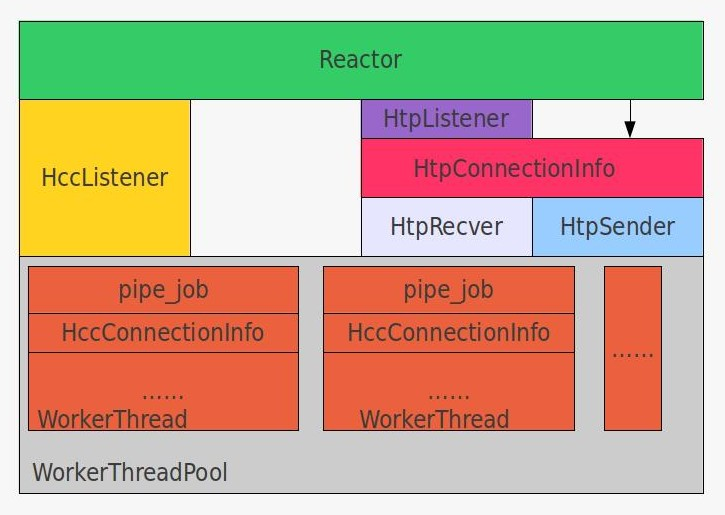
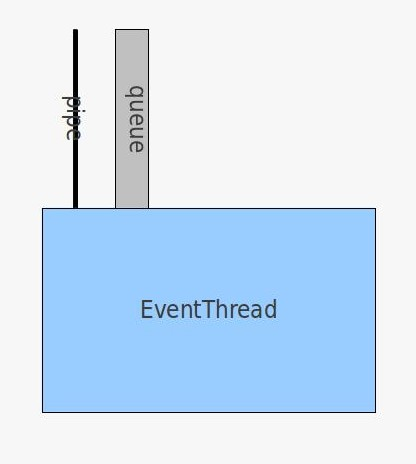
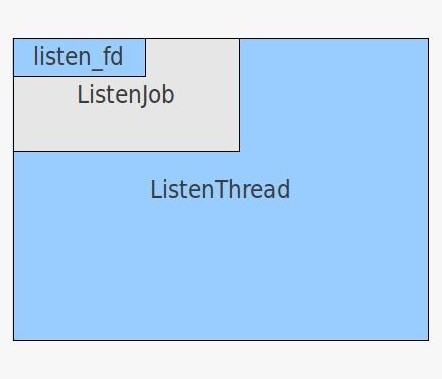
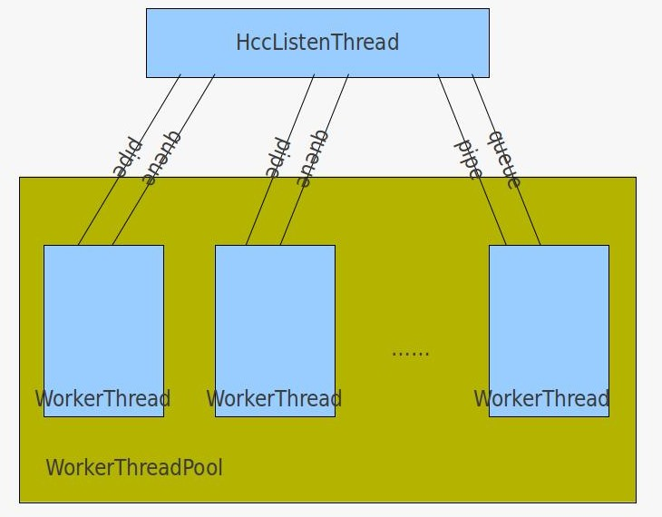
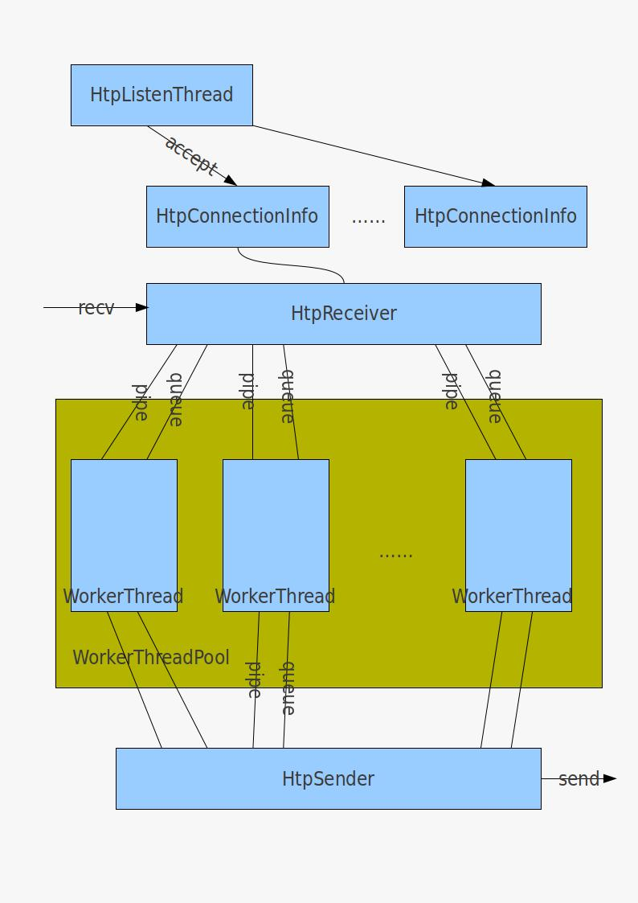
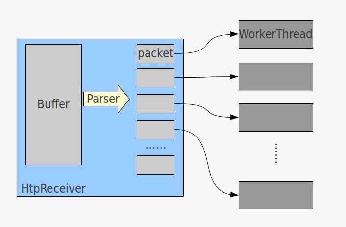

高性能框架文档
总体架构
示例图

简要说明
-
Reactor: 外部接口，用来创建高并发监听线程、高吞吐监听线程、高吞吐连接以及超时事件等
-
HccListener：高并发(High ConCurrency)监听线程
-
HtpListener: 高吞吐(High ThroughPut)监听线程
-
HtpConnectionInfo：高吞吐连接对象, 由HtpListener创建，主动连接时也可以直接通过Reactor创建
-
HtpRecver：高吞吐连接对象中接收对端数据的线程
-
HtpSender：高吞吐连接对象中发送数据给对端的线程
-
WorkerThreadPool：工作线程池
-
WorkerThread：工作线程，全事件触发机制
-
pipe_job：每个工作线程监听一个pipe上的读端口的事件，外部通过pipe写端口触发一个事件，高吞吐中的分包处理等都是通过这种机制触发工作线程进行处理的。
-
HccConnectionInfo：高并发连接，也就是一个客户端的连接对象，每个线程维护多个这样的对象，主要监听读、写、超时事件
EventBase
说明
事件反应堆, 事件被抽象为Job
函数
-
init_event_base()
初始化反应堆
-
sint32 add_new_event(Job *job);
添加新事件到反应堆
-
sint32 update_event(Job *job);
更新事件
-
sint32 delete_event(Job *job);
删除事件
-
sint32 event_loop();
进入事件循环
-
sint32 event_loop_exit();
退出事件循环
Job
说明
事件的抽象，隶属于某个反应堆才会有意义，当事件发生时，会调用Job::run()接口，目前支持描述符上的事件(读、写)和超时事件
函数
-
run(sint32 fd, sint16 which) = 0;
事件触发函数，fd为某个打开的描述符，which指定某个具体的事件类型(读、写、超时)
不同的事件实现不同的run函数以达到各自的目的
-
delete_event_success();
事件从反应堆中移除时，回调该函数，一般用来做内存回收工作
EventThread
说明
抽象的事件线程, 每个这样的线程包含一个EventBase，这样线程中的任何动作都是基于事件触发的
示例图

函数
-
sint32 self_init() = 0;
不同的线程在初始化完成后进行各自的初始化动作
-
sint32 begin_routine() = 0;
进入事件循环前的动作
-
sint32 end_routine() = 0;
事件循环终止前被调用
-
post_message(MessageHandler *handler, void *arg1, void *arg2);
提供一个通用的机制，让其他线程向某个线程发送消息，让执行消息的过程在指定线程上执行
ListenThread
说明
抽象的监听线程, 继承自EventThread，拥有EventThread的所有特性
示例图

函数
-
self_init();
创建监听事件(ListenJob)，并插入到线程反应堆, 当有新连接到来的时候会触发一个监听事件
-
sint32 end_routine();
退出事件循环前删除监听事件
-
sint32 add_new_connect(sint32 fd) = 0;
增加新连接，高并发/高吞吐有不同的实现
WorkerThreadPool
说明
工作线程池，管理所有工作线程
函数
-
init(sint32 number, timeval &tv);
初始化线程池，创建并启动number个工作线程, 工作线程的统计间隔为tv
-
dispatch_new_job(Job *job);
指派一个事件给工作线程，工作线程会将事件添加到反应堆中，目前仅支持轮巡的方式
WorkerThread
说明
工作线程，继承自EventThread, 要与WorkerThreadPool配合使用
函数
-
self_init();
向反应堆增添一个超时事件，用来做一些统计任务
-
begin_routine();
通知线程池已经启动事件循环
-
end_routine();
结束线程，并删除统计超时事件
HccListenThread
说明
高并发(High ConCurrency)连接监听线程, 继承自ListenThread
示例图

函数
-
add_new_connect(sint32 fd);
accept一个新连接, 创建一个连接对象，调用WorkerThreadPool::dispatch_new_job将其指派给一个工作线程, 即一个工作线程负责处理多个连接事件。
HtpListenThread
说明
高吞吐(High ThroughPut)连接监听线程，继承自ListenThread。
示例图

函数
-
add_new_connect(sint32 fd)
accept一个新连接, 设置读事件。和高并发不同，高吞吐的连接不由工作线程维护，它的读写操作分别由一个线程所维护，HtpReceiver负责读，将读到的数据分成多个命令包，分发给工作线程进行处理，处理完成后，返回包将发送给HtpSender线程，HtpSender线程再发送给对端。
ConnectionInfo
说明
连接事件, 继承自Job
重要成员
-
string _connected_ip;
对端ip
-
uint16 _connected_port;
对端port
-
Receiver *_receiver;
主要用来接收数据
-
Sender *_sender;
主要用来发送数据
-
MessageProcessor *_message_processor;
向使用者开放，和使用者进行交互的接口
-
sint32 _is_connect;
是否连接上; 0=no, 1=yeshtp_receiver.jpg
-
sint32 _is_reconnect;
是否重连, 只对主动连接有效; 0=no, 1=yes
-
sint32 _handle;
连接句柄，使用者用这个句柄向对端发送数据
函数
-
run(sint32 fd, sint16 which);
当某个连接上有事件发生时，通常是读、写、超时事件，执行相应的动作
-
write_data(sint32 no, AsynOperation *ao) = 0;
向某个连接发送数据, no标识数据来自哪个工作线程，ao是异步操作，当数据发送完毕后，会通知发送者数据已经发送完毕
-
reconnect(uint32 handle) = 0;
重连操作
-
update_event() = 0;
更新事件
-
deliver_message(MessageHandler *handler, void *arg1, void*arg2) = 0;
递送一个消息，用哪个线程发送消息有所不同
-
handle_close() = 0;
回收内存资源，如果不重连，还需要销毁其他数据，例如线程资源等
-
add_reconnect_timeout();
如果主动连接需要重连，则增加一个重连超时事件
-
set_is_connect()
如果连接成功，通知使用者
HccConnectionInfo
说明
高并发连接对象，继承自ConnectionInfo，而ConnectionInfo又继承自Job，在运行过程中，所有的这些连接对象有几个工作线程维护(这里设计成不管是读、写、超时事件，每个连接对象永远只会在最初的那个线程上执行对应的操作)，要求是每个事件的处理时间较短，否则会使线程中其他事件得不到处理。
函数
-
write_data(sint32 no, AsynOperation *ao);
向客户端写数据，写完或出错后告诉调用者写操作结果
-
reconnect(uint32 handle);
主动连接断开后重连
-
handle_close();
清除缓冲区，如果要重连则添加重连超时，否则销毁连接对象。
-
update_event();
更新事件, 如果发送缓冲区中有数据，则将当前事件改为读+写事件, 否则改为读事件。
-
deliver_message(MessageHandler *handler, void *arg1, void*arg2);
将数据发送给所属工作线程，由工作线程负责发送。
HtpConnectionInfo
说明
继承自ConnectionInfo，和高并发不一样，高并发一般处理段连接，而高吞吐一般处理的是长连接（服务器之间的连接），为了使服务器间的消息能够并行的处理，采用了分包并将各个包交给不同的工作线程中处理的策略（要求每个包是无序的），并让包处理和socket的读写分离，单独一条线程读且单独一条线程写；读写线程、分包、处理包机制由HtpConnectionInfo控制。
函数
-
init();
初始化读线程和写线程。
-
write_data(sint32 no, AsynOperation *ao);
no指定包是由哪个线程过来的，所以该包就插入到该线程对应的队列中，具体在HtpSender中介绍。
-
reconnect(uint32 handle);
主动连接重连，如果读写线程没有创建，则创建线程，然后将读写事件添加到HtpReceiver中
-
handle_close();
清理数据，如果不重连，则要销毁读、写线程
-
update_event();
如果发送缓冲区中有数据，则添加写事件到HtpSender线程中；如果未连上，则添加读+写事件到HtpReceiver中；否则添加读事件到HtpReceiver中。
-
deliver_message(MessageHandler *handler, void *arg1, void*arg2);
将数据按照轮巡的方式发送到任意工作线程，由工作线程转发给HtpSender。
Receiver
说明
读数据接口
重要成员
-
MessageProcessor *_message_processor;
由用户实现的消息处理接口，当读到数据时会调用。
函数
-
read_data(sint32 fd);
读数据
-
clean();
默认的清理函数，释放读缓冲
-
process_recv(sint32 handle) = 0;
将读到的数据进行处理，高并发、高吞吐的处理方式不一样。
HccReceiver
函数
-
process_recv(sint32 handle);
处理数据，调用用户的处理接口，处理读到的数据
HtpReceiver
说明
高并发中每个连接拥有一个单独的读数据线程, 所以它继承自EventThread和Receiver，
重要成员
-
MessageParser *_parser;
解包接口，由用户实现，解包之后HtpReceiver会将包派发给不同的工作线程进行处理。
示意图

函数
-
process_recv(sint32 handle);
先对输入缓冲解包，然后将各个包分派给工作线程处理。
Sender
说明
写数据接口
函数
-
write_data(sint32 fd, AsynOperation *ao, sint32 &write_len);
如果缓冲区中有数据或发不出去，则将数据放进缓冲区; 否则将数据写到对端。写完将回调用户的完成接口。
-
flush_data(sint32 fd, sint32 &flush_data);
如果写事件发生，将缓冲区中的数据写到对端。
-
clean() = 0;
清理，高并发和高吞吐的清理过程不同。
HccSender
-
void clean() = 0;
如果发送缓冲区有数据，则返回-2告诉用户连接断开，清空缓冲区。
HtpSender
说明
因为发送数据包非常多，如果在发送数据时，多个线程同时操作一个队列，必然会造成多个线程抢锁或者惊群等现象，所以在HtpSender中创建了和线程个数相等的队列，每个工作线程将数据发送到指定队列，然后由HtpSender进行一一处理，这样做理论上效率会提高很多
示意图
见HtpListenThread
函数
-
clean() = 0;
清除发缓冲区数据，如果要重连，则不销毁线程，否则销毁线程。
RecycleThread
说明
单件类，HtpConnection中的读写线程很可能在本线程中回收，这样会造成调用pthread_join时阻塞从而线程永远不会退出，为了使这些线程在线程外进行回收，特别写了一个专门的用来回收线程的线程。不能回收自己。
ConnectionManager
说明
单件类，掌管所有ConnectionInfo信息，用户要发送数据时也是通过这个对象进行发送。
函数
-
send_data(sint32 handle, AsynOperation *ao);
通过ConnectionInfo的句柄，发送一个异步写操作。
Reactor
说明
框架对外的所有接口
函数
-
init(sint32 num_thread, sint32 sec);
初始工作线程，指定工作线程统计间隔。
-
add_hcc_listener(const char *ip, uint16 port, MessageProcessor *mp, sint32 timeout);
创建一个高并发监听线程, mp指定如何处理输入，timeout指定连接在timeout秒内不发送数据，则将连接断开。
-
add_connector(const char *ip, uint16 port, MessageProcessor *mp, bool is_reconnect);
创建一个普通连接(仅在一个线程中进行处理)，mp指定如何处理输入数据，is_reconnect指定断开后是否重连。
-
add_htp_connector(const char *ip, uint16 port, MessageParser *parser, MessageProcessor *mp, sint32 is_reconnect);
创建一个高吞吐连接，parser指定如何分包，mp指定线程如何处理每个分包，is_reconnect指定是否重连。
-
add_htp_listener(const char *ip, uint16 port, MessageParser *parser, MessageProcessor *mp, sint32 timeout = 0);
创建一个高吞吐监听线程
-
add_timer(TimeoutHandler *th, void *arg, const timeval &tv, sint32 rotate, uint32 &handle);
添加一个超时事件，th指定超时事件如何进行处理，arg为超时处理的参数，tv指定多久后进行超时，rotate指定是否循环，handle是返回给用户的超时事件句柄
-
cancel_timer(sint32 handle);
取消超时事件
-
post_message(MessageHandler *handler, void *arg1, void *arg2);
向工作线程发送一个消息，handler指定消息将被如何处理，arg1和arg2为handler的参数。
{kind=link}